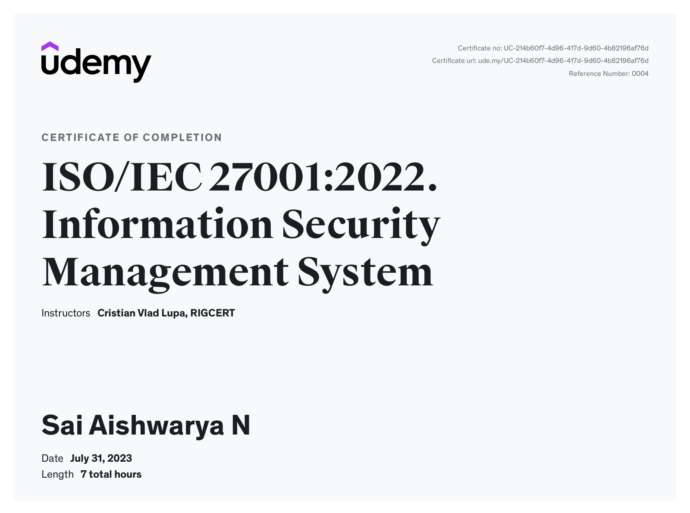
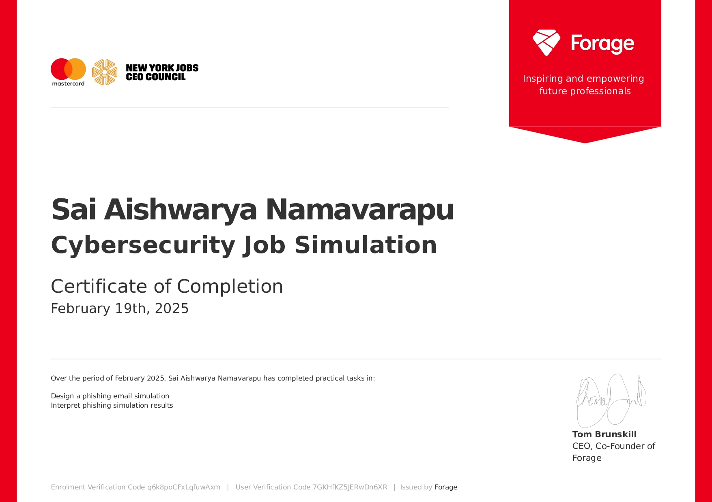

_page-0001.jpg )



Hackathons
I actively participate in hackathons and competitions to enhance my practical cybersecurity skills and problem-solving abilities. One notable event was the CNY Hackathon, an immersive cybersecurity competition combining infrastructure challenges with Capture the Flag (CTF) tasks. During the event, participants were split into Blue Teams, responsible for defending critical infrastructure against cyberattacks, and Red Teams, tasked with offensive testing. The Black Team provided essential infrastructure management and technical support. The competition was scored based on maintaining service availability and successful completion of security tasks, offering a maximum of 15,000 points (12,000 points dedicated to infrastructure defense). The event significantly strengthened my strategic thinking, teamwork, and practical cybersecurity knowledge, making it a highly rewarding and enriching experience.
Workshops and Seminars
I have actively participated in various workshops and seminars related to cybersecurity since my first year of B.Tech. Among these numerous events, the CNY Hackathon particularly stood out due to its unique blend of Capture The Flag (CTF) competitions and infrastructure defense tasks. Participants were split into teams with specific roles: the Blue Teams were responsible for defending and securing their assigned network services, while the Red Teams were focused on launching targeted cyberattacks. The Black Team facilitated the smooth running of the event by managing technical infrastructure. With challenges simulating real-world cybersecurity threats, the hackathon tested our skills in system profiling, threat detection, and rapid response under high-pressure scenarios. The event provided practical exposure to cybersecurity defense strategies, teamwork, and strategic thinking, profoundly enriching my understanding of cybersecurity fundamentals and best practices.